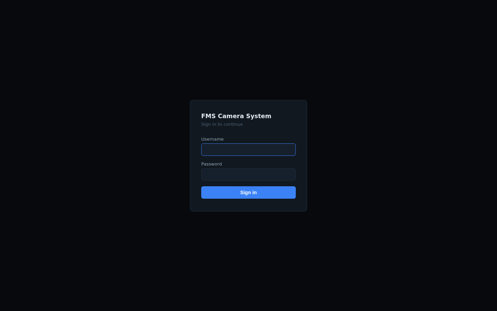
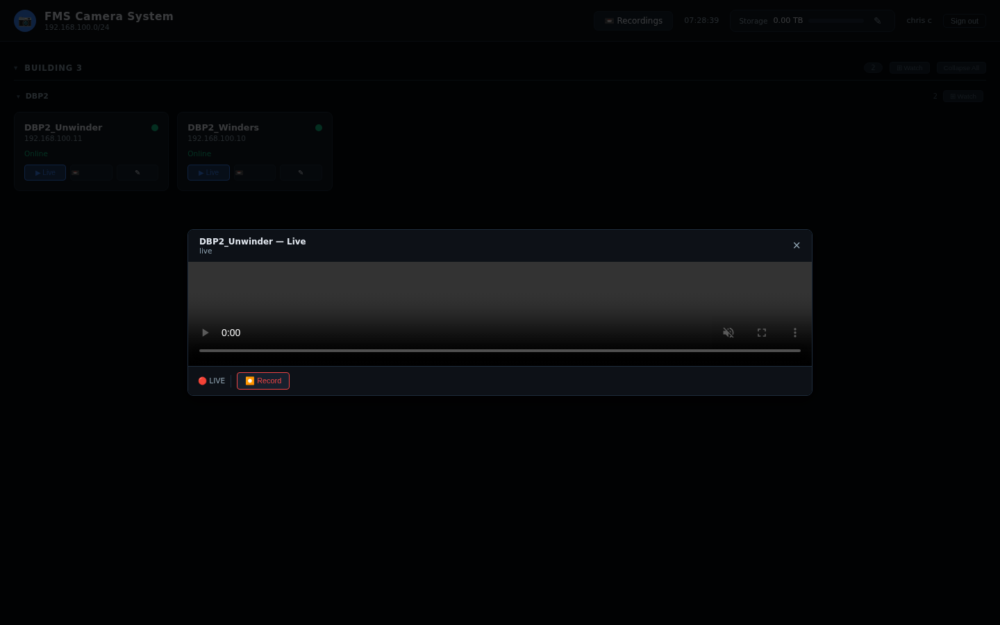
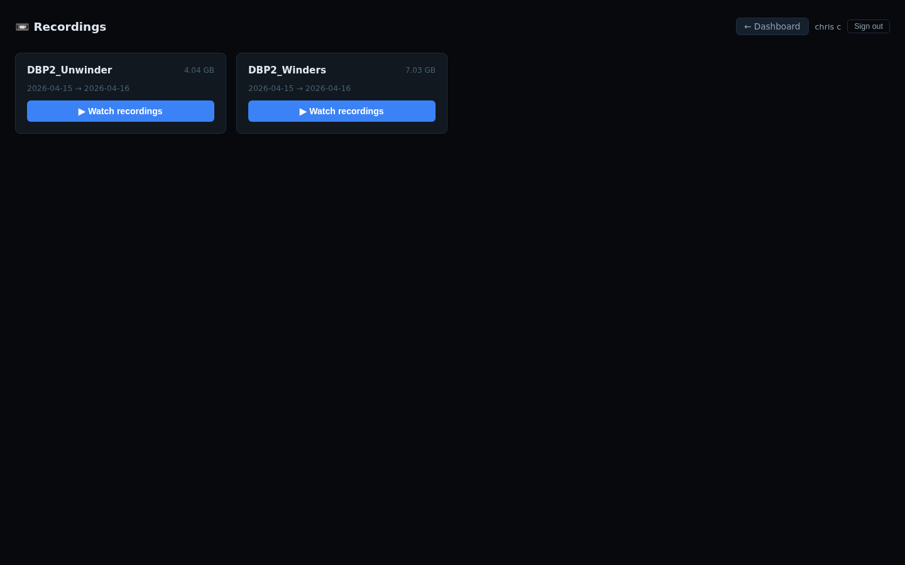
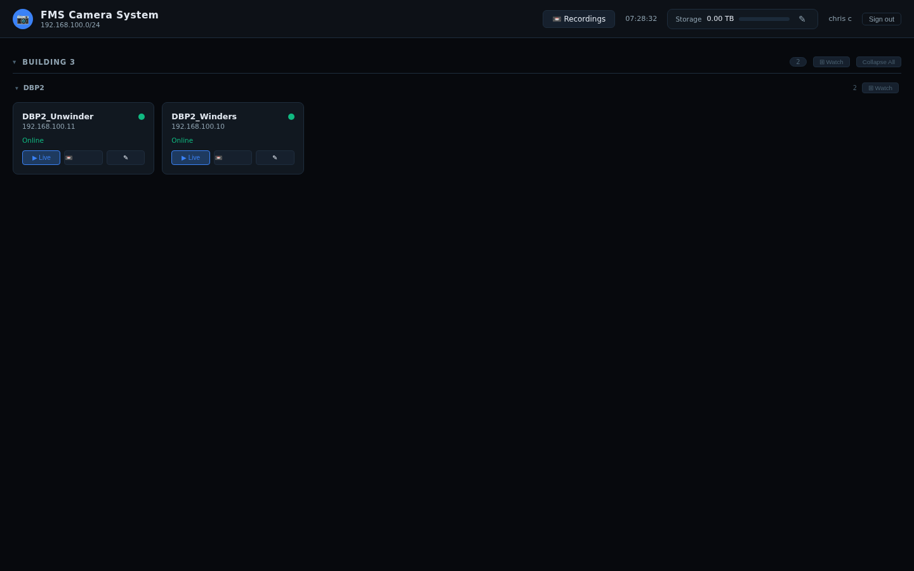
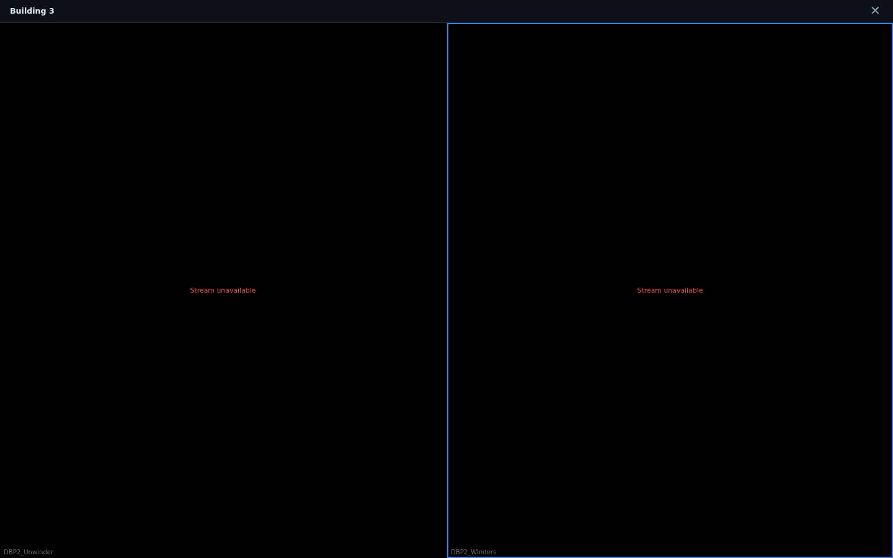
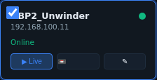
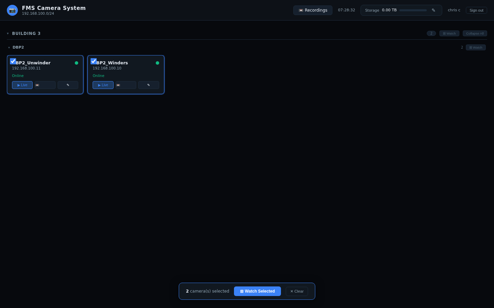

1 Signing In
In your browser go to http://192.168.1.61.
You will be redirected to the login page.
Type your Username and Password, then click Sign in.
New accounts require a password change on first use. You will be prompted automatically — enter a new password (minimum 8 characters) and click Set password & continue.

2 The Dashboard
After signing in you land on the main camera dashboard. Cameras are grouped by Building / Category and Area / Sub-category.
3 Viewing a Live Feed
Scroll to the building/area you need, then locate the camera card. A green dot and "Recording" label means the camera is active.
The live stream opens in a full-screen-style overlay. Video plays automatically.
- Right-click the video to zoom in (2×, 3×, or 4×).
- While zoomed in you can click and drag to pan around the image.
- Press Escape or click × to close.

4 Viewing Recordings
Click 📼 Recordings in the top-right header, or click the 📼 icon on any camera card to jump directly to that camera's recordings.
Use the Camera drop-down and Date picker to filter recordings. The list shows all segments for that day.
Click ▶ Play next to any segment. The video opens with playback controls:
- -30s / -10s / +10s / +30s — skip backwards or forwards.
- 1× — cycle through ½×, 1×, 2×, 4× speeds.
- Jump — type an absolute time (e.g.
14:22) to seek instantly.
While playing a recording, click ✂ Excerpt to save a clip to the excerpts library for later review or export.

5 Watching Multiple Cameras at Once
The ⊞ Watch button on every category or sub-category header opens all cameras in that group as a live grid.

All streaming cameras in that group open in a tiled grid view. The grid automatically picks the best column layout.
Double-click any tile to expand it full-screen. Double-click again (or click ← Back to Grid) to return to the grid.
Right-click any tile to choose:
- ⛶ Focus / Expand — same as double-click.
- ↗ Open in Single View — close the grid and open that camera in the regular single-camera player.
Click ✕ in the top-right corner, or press Escape.

6 Selecting Specific Cameras for Multi-View
Use the checkbox on individual camera cards to hand-pick exactly which cameras you want to watch together — even across different buildings or areas.
A small checkbox appears in the top-left corner of the card when you hover over it. Click it to select that camera.
Selected cameras get a blue border. You can select cameras from different buildings and areas freely.
A floating bar appears at the bottom of the screen showing how many cameras are selected. Click Watch Selected to open the grid with just those cameras.
Click ✕ Clear in the bar, or simply uncheck each camera. The selection bar hides automatically when nothing is selected.


7 Tips & Shortcuts
| Action | How |
|---|---|
| Open live feed | Click ▶ Live on any camera card |
| Watch all cameras in a group | Click ⊞ Watch on the category or sub-category header |
| Select specific cameras for multi-view | Hover card → check checkbox → click ⊞ Watch Selected |
| Expand one camera in grid view | Double-click the tile |
| Return to grid from expanded tile | Double-click again, or click ← Back to Grid |
| Zoom in on live/VOD video | Right-click the video → choose zoom level |
| Pan while zoomed in | Click and drag the video |
| Jump to a time in a recording | Type HH:MM in the Jump field and press Enter or click Jump |
| Close any popup / modal | Escape key, or click × |
| View recordings for one camera | Click the 📼 icon on the camera card |
| Collapse/expand a building section | Click the section header |
| Sign out | Click Sign out in the top-right header |
http://192.168.1.61 so it's always one click away.